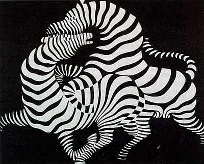
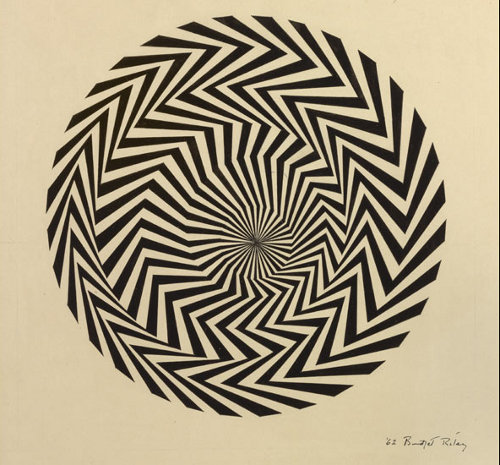

Zebra
Victor Vasarely Zebra, 1937 is a highly contrasting somewhat-abstracted work that set the course for Optical Art in the 20th century. Two zebras intertwine on a black background, limbs overlapping. The zebras are defined only by the alternating black and white lines that make up their stripes. There is no outline that defines the boundary of the figures. Placed against a black background, the stark contrast with the white stripes creates a complex relationship between the abstract and the real. At the same time the two zebras appear, they also fade and break-apart into abstract shapes. The overlapping bodies of the zebras are full of movement and power.

Blaze
This drawing includes several indications of Riley's decision-making process. Her inscription at upper right states that 'all angles [must be] as acute as possible', which contrasts with another study for Blaze (1962, Private Collection), where Riley instead considered radiating lines of varying distributions. The collaged piece of paper indicates another change, covering up a previous attempt at the central passage. In the series of 'Blaze' paintings which grew out of this study, the centre is eventually manifested as a void.

Marilyn Monroe
In 1975 Jean-Pierre Yvaral coined the phrase 'Numerical Art' to describe artwork composed (or programmed) according to numerical rules or algorithms. From this time onwards he used computers to digitally process and manipulate images, although the final images were always hand painted. He used this technique to produce several series of portraits starting from instantly recognisable images, such as the face of Marilyn Monroe, and processing them to the point where they become abstract compositions, while the original image remains recognisable.